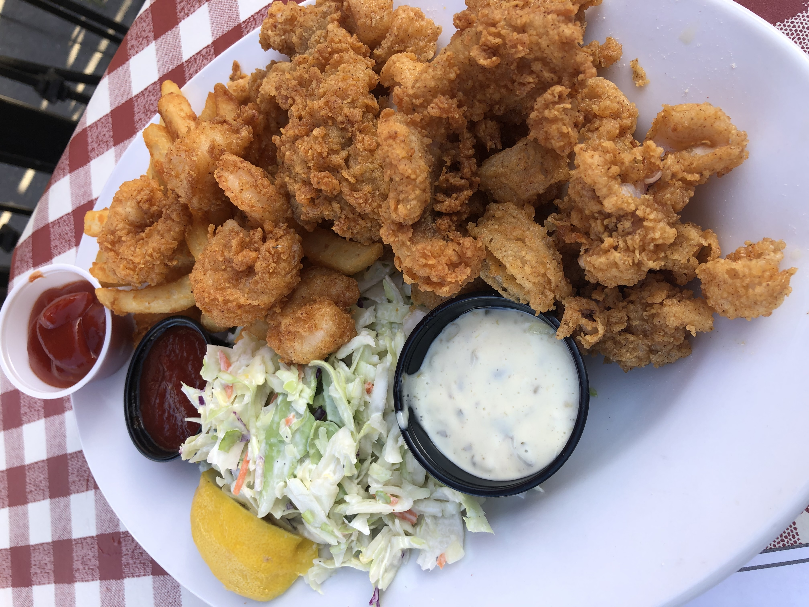
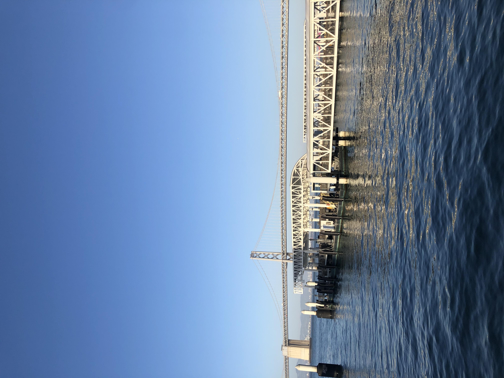
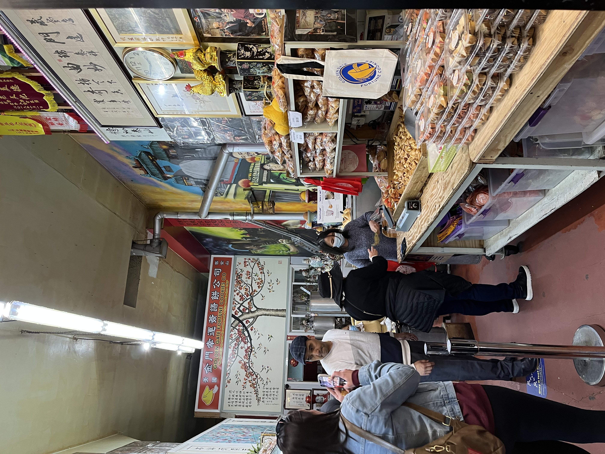
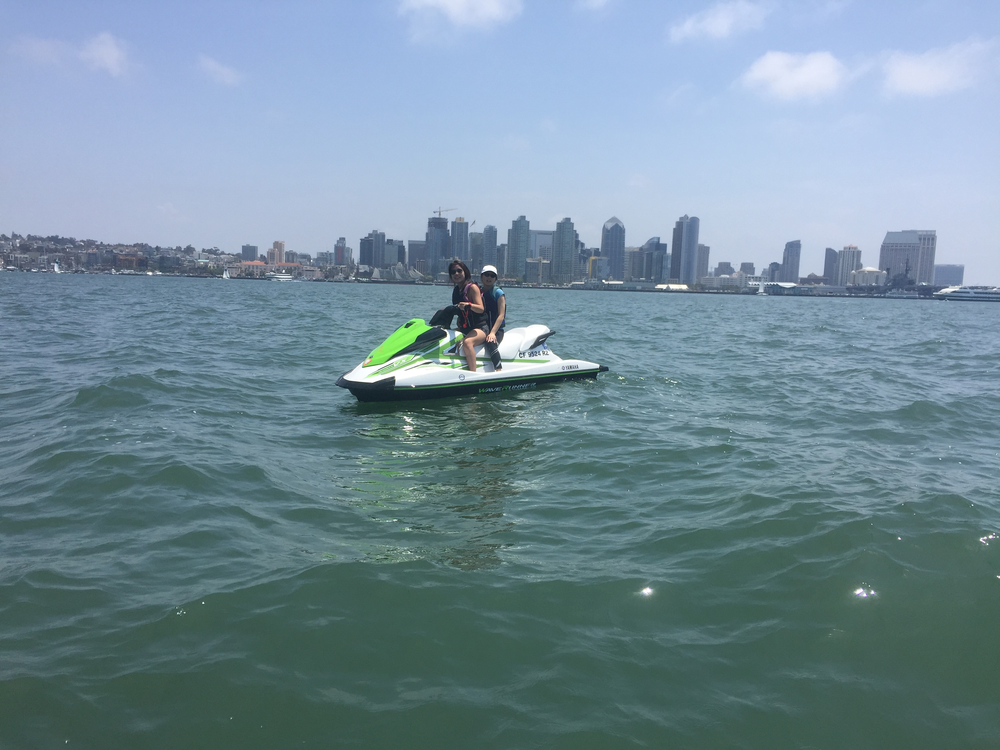
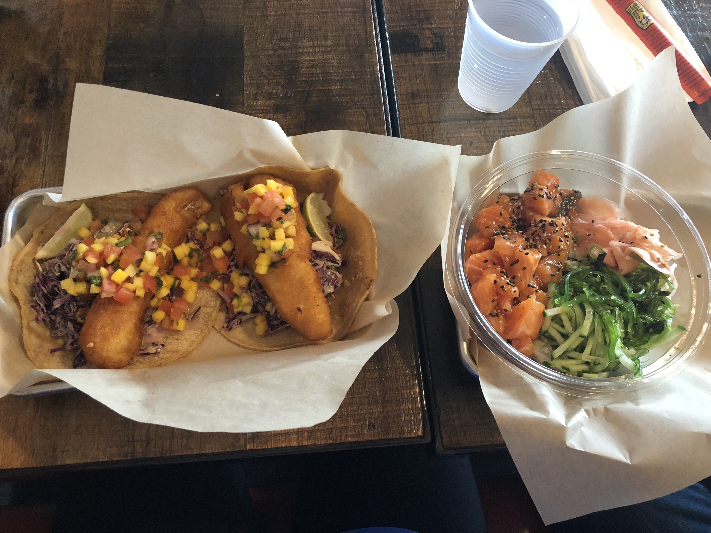
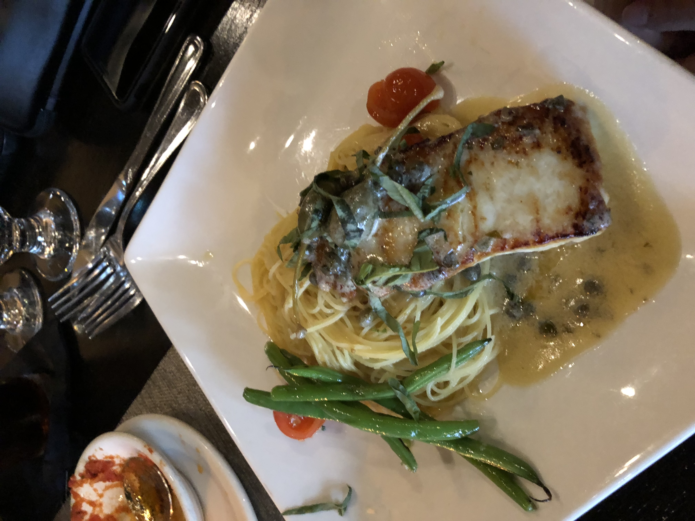

Home
Sitemap
About the author
Contact
Home
Sitemap
About the author
Contact
| Number | Location Name | Location Highlight |
|---|---|---|
| 1 | San Francisco | The adventures in Fisherman's Wharf! |
| 2 | San Diego | The nearby beaches and great weather! |
| 3 | Carmel Mountain | The variety of food! |
While in California one of the tech hubs to visit is San Francisco. Sightseeing ranges from the waterfronts at Fisherman's Wharf to the rolling hills of Chinatown. Fisherman's wharf has some of the best seafood that San Francisco has to offer. Ranging from food street stalls to high end restaurants there is something for everyone. Chinatown is a historical representation of the first asian families who have settled there. As you walk along the hills you can hear the Cantonese words exchanged as individuals bargain for groceries at the food stalls. It is also home to a fortune cookie factory where visitors can stop by to see the cookie making process and design their own fortune cookies. San Francisco is a must see, but beware of the hills!
  San Diego is home to some of the best beaches! You can head out to any of them for a swim, walk on the beach, or jet ski in the waters! The variety of food options are great to explore Asian, American, and Mexican cuisines. The weather is always great in San Diego. One of the famous places to visit is the San Diego Zoo!
Carmel Mountain is home to a variety of food and drink options. They have various beer and wine tours as well as a wide array of cuisine options pictured below. Carmel Mountain is actually not a mountain itself, but instead the shadow of Black Mountain. It's landscape is great for golfing.
 